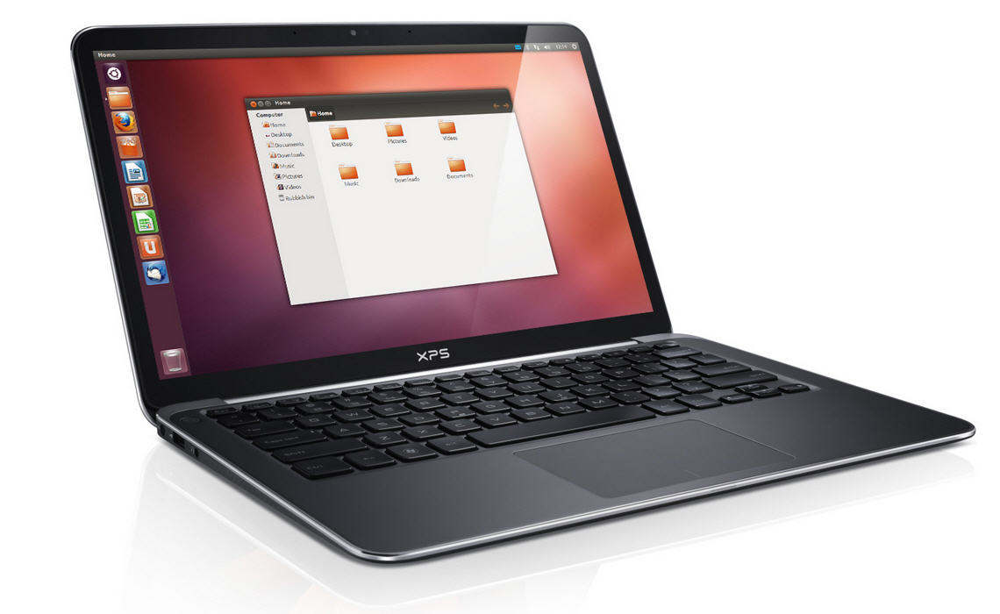
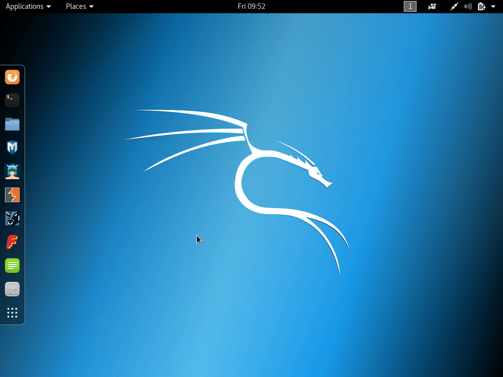
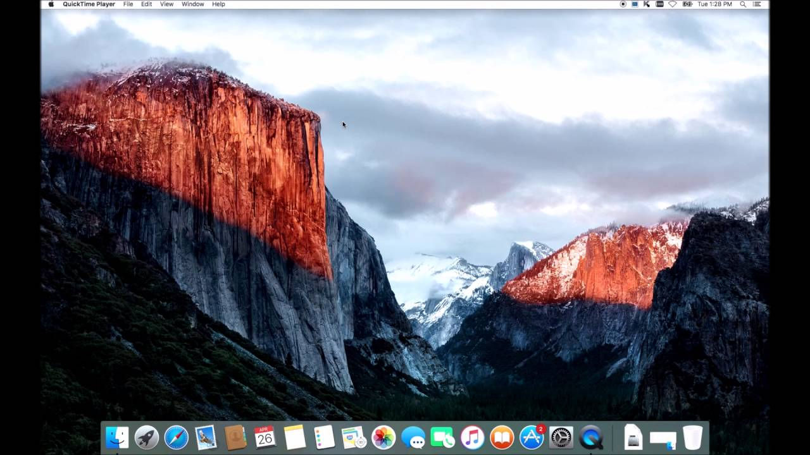
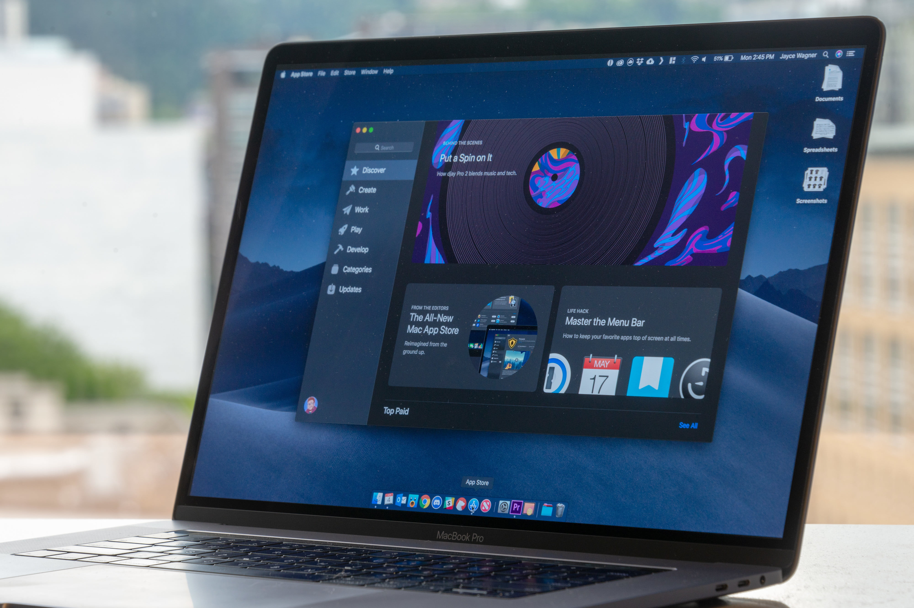
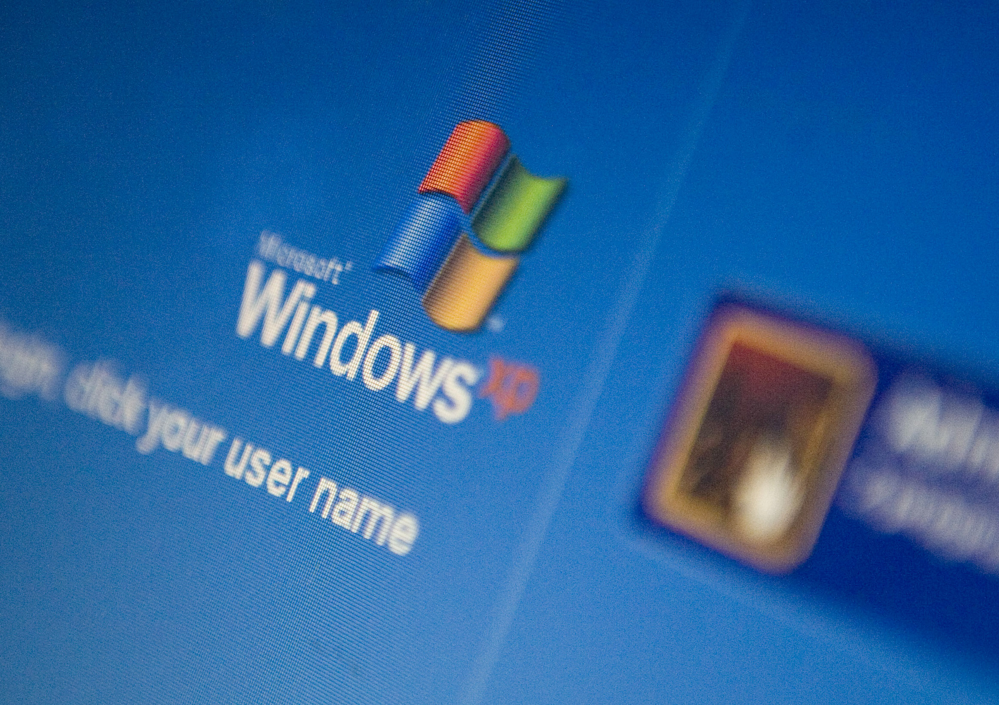
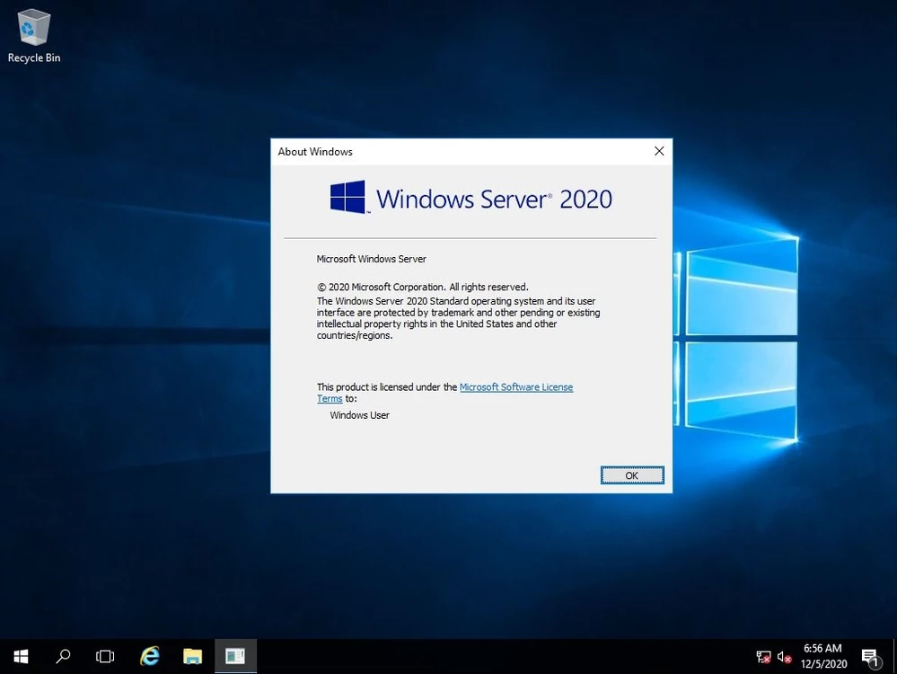

Major Desktop Operating Systems:
-
Linux:
The Linux kernel originated in 1991, as a project of Linus Torvalds, while a university student in Finland. He posted information about his project on a newsgroup for computer students and programmers, and received support and assistance from volunteers who succeeded in creating a complete and functional kernel.Linux is Unix-like, but was developed without any Unix code, unlike BSD and its variants.

Because of its open license model, the Linux kernel code is available for study and modification, which resulted in its use on a wide range of computing machinery from supercomputers to smart-watches. Although estimates suggest that Linux is used on only 1.82% of all "desktop" (or laptop) PCs, it has been widely adopted for use in servers and embedded systems such as cell phones.

Linux has superseded Unix on many platforms and is used on most supercomputers including the top 385. Many of the same computers are also on Green500, and Linux runs on the top 10. Linux is also commonly used on other small energy-efficient computers, such as smartphones and smartwatches.
-
Mac OS:

MacOS (formerly "Mac OS X" and later "OS X") is a line of open core graphical operating systems developed, marketed, and sold by Apple Inc., the latest of which is pre-loaded on all currently shipping Macintosh computers.
MacOS is the successor to the original classic Mac OS, which had been Apple's primary operating system since 1984.

Unlike its predecessor, MacOS is a UNIX operating system built on technology that had been developed at NeXT through the second half of the 1980s and up until Apple purchased the company in early 1997.
The operating system was first released in 1999 as Mac OS X Server 1.0, followed in March 2001 by a client version.

Since then, six more distinct "client" and "server" editions of MacOS have been released, until the two were merged in OS X 10.7 "Lion".
Prior to its merging with MacOS, the server edition- MacOS Server - was architecturally identical to its desktop counterpart and usually ran on Apple's line of Macintosh server hardware.
With Mac OS X v10.7 Lion, all server aspects of Mac OS X Server have been integrated into the client version and the product re-branded as "OS X".
-
Microsoft Windows:

Microsoft Windows is a family of proprietary operating systems designed by Microsoft Corporation and primarily targeted to Intel architecture based computers, with an estimated 88.9 percent total usage share on Web connected computers.The latest version is Windows 10.

In 2011, Windows 7 overtook Windows XP as most common version in use. Microsoft Windows was first released in 1985, as an operating environment running on top of MS-DOS, which was the standard operating system shipped on most Intel architecture personal computers at the time.
In 1995, Windows 95 was released which only used MS-DOS as a bootstrap. For backwards compatibility, Win9x could run real-mode MS-DOS and 16-bit Windows 3.x drivers.

Windows ME, released in 2000, was the last version in the Win9x family. Later versions have all been based on the Windows NT kernel. Current client versions of Windows run on IA-32, x86-64 and 32-bit ARM microprocessors.
In addition Itanium is still supported in older server version Windows Server 2008 R2. In the past, Windows NT supported additional architectures.

Server editions of Windows are widely used. In recent years, Microsoft has expended significant capital in an effort to promote the use of Windows as a server operating system.
However, Windows' usage on servers is not as widespread as on personal computers as Windows competes against Linux and BSD for server market share.